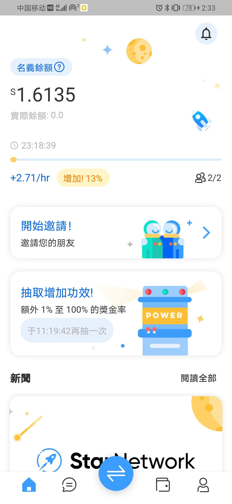

国际项目Star Network星网!
更多详细请返回首页加入社区哦
24小时启动制
国际项目需加速器（首页有）
Star Network是一个具有支付功能的社交 DeFi（去中心化金融）网络，是未来的去中心化金融平台，具有交换、借贷、钱包和支付功能，并实现存储、增长和转移您的 Star 余额。Star Network 的使命是成为一个全球项目，成为世界上最大的一站式去中心化金融平台之一。
核心目标是通过社会力量以去中心化的方式重建金融世界。未来将建立主网。
Star Network 的核心团队由投行、科技、支付网络领域的专业人士组成。核心团队由高盛、摩根士丹利等投行、苹果等科技巨头以及Visa、Paypal络的前高管组成(核心团队成员会在项目后期时机成熟时公开身份)。
任意邮箱注册验证空投1.6币/小时矿机，直推奖励25%有效算力，每12小时可抽奖随机加速算力。后续有KYC，通过后进入钱包。有减产机制，达到50万、200万、1000万矿工后逐次减半，达到1亿矿工或2022年8月31日停止，以先到者为准。
官网
网页下载
谷歌商店下载
苹果商店下载
必选>邀请码：xiaojiao
开加速器注册。
